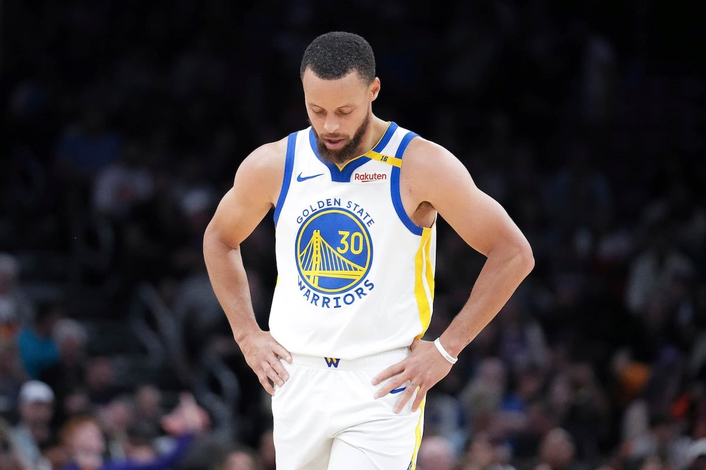

Golden State Warriors: Sin movimientos para la próxima temporada
Los Golden State Warriors, uno de los equipos más importantes de la NBA, no han realizado movimientos significativos en cuanto a traspasos o contrataciones para la siguiente temporada. Este hecho ha sorprendido a muchos seguidores y expertos, ya que los Warriors podrían haber hecho algunos ajustes en su plantilla para mejorar su rendimiento.
Aspectos destacados:
- No hubo incorporaciones de jugadores estrella.
- El equipo confía en la continuidad de su plantilla actual.
- Steve Kerr sigue siendo el entrenador principal.
- Se espera que la temporada sea desafiante, pero el equipo sigue siendo fuerte.
Tabla de rendimiento de la temporada pasada:
| Jugador | Partidos Jugados | Puntos por Partido | Asistencias | Rebotes |
|---|---|---|---|---|
| Stephen Curry | 70 | 24.5 | 6.0 | 4.4 |
| Jimmy Butler | 30 | 17.9 | 5.9 | 5.5 |
| Draymond Green | 68 | 9.0 | 5.6 | 6.1 |